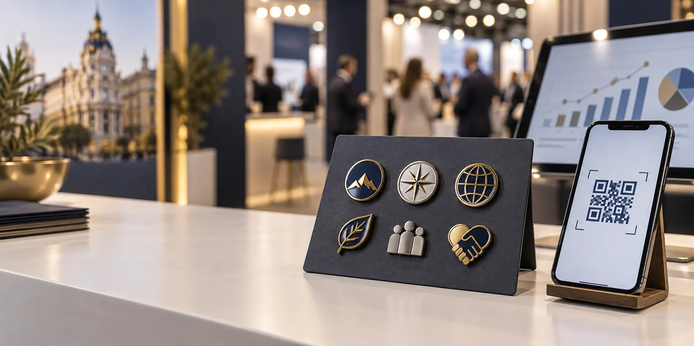

Un pin puede abrir una conversación; el seguimiento ayuda a medir si avanzó.
Un regalo de feria puede generar una conversación memorable, pero repartir muchas unidades no demuestra por sí solo que la campaña haya funcionado. Para conocer el ROI del merchandising en ferias, conecta cada pieza con un objetivo, una acción medible y seguimiento comercial: del coste por lead cualificado al margen generado después del evento.
La temporada profesional de otoño ofrece una oportunidad para aplicar este método. IFEMA agenda Tech Show Madrid el 4 y 5 de noviembre de 2026 y Empack Madrid el 11 y 12 de noviembre. Si preparas un stand, define cómo medirlo antes de producir. Consulta el calendario de IFEMA.
Qué significa realmente el ROI del merchandising en ferias
El ROI no es el número de pines entregados ni los escaneos de un QR. Compara el valor económico atribuible con el coste. En B2B, una conversación puede convertirse en reunión, oportunidad y, más adelante, venta.
- Atención: visitas, conversaciones y piezas entregadas.
- Interés identificable: escaneos, formularios y contactos aptos para seguimiento.
- Resultado comercial: reuniones, oportunidades cualificadas, pedidos y margen atribuible.
Los dos primeros niveles no son ventas. Define qué resultado cuenta y qué ventana de seguimiento usarás para medir el ROI de regalos promocionales.
Fórmulas sencillas para medir una campaña
Registra el coste total: fabricación, diseño, tarjetas o packaging, transporte, landing page, QR y la parte del tiempo del equipo que decidas asignar. Mantén el mismo criterio al comparar eventos.
| Indicador | Fórmula | Lectura |
|---|---|---|
| Coste por lead cualificado | Coste total ÷ leads cualificados | Coste medio por contacto que cumple tu perfil. |
| ROI (%) | (Margen bruto atribuible − coste) ÷ coste × 100 | Retorno con margen y costes definidos consistentemente. |
Usa margen o contribución, no el valor bruto de ventas. Si aún no hay pedidos cerrados, informa el pipeline influido aparte; no lo presentes como ingreso. Registra qué oportunidades nacieron en el stand y cuáles ya existían.
Qué indicadores seguir antes, durante y después
Una medición práctica recorre todo el embudo. La Asociación Americana de Marketing recomienda observar citas, tráfico del stand, leads cualificados, oportunidades, pipeline e ingresos, y conectar la captura de contactos con el seguimiento comercial.
| Momento | Indicador | Qué ayuda a entender |
|---|---|---|
| Antes | Coste presupuestado y objetivo | Si existe una meta comparable. |
| Durante | Conversaciones y reuniones | Si el regalo apoya una interacción útil. |
| Durante | QR y formularios | Si la llamada a la acción genera un siguiente paso. |
| Después | Leads cualificados y coste por lead | Qué contactos encajan con tu perfil. |
| Después | Oportunidades y margen cerrado | Si la actividad contribuyó a resultados. |
Elige pocos indicadores que puedas capturar bien y asigna a alguien la responsabilidad de registrarlos. Un dato sencillo y consistente suele ser más útil que un panel que nadie actualiza.
Cómo usar un QR sin confundir escaneos con ventas
Un QR en la tarjeta del pin puede llevar a una página de producto, demo, catálogo o formulario. Usa una URL con parámetros UTM y una página adaptada a móvil; crea enlaces distintos por feria y, si aporta valor, por diseño o audiencia.
- Define una llamada a la acción concreta.
- Usa un enlace identificable por evento, no un QR genérico.
- Registra feria, campaña y fecha en el CRM.
- Califica los leads con criterios consistentes.
- Compara escaneos, formularios válidos, reuniones y oportunidades.
El QR mide una interacción digital; no demuestra quién recibió o conservó el pin. Si el formulario recoge datos personales, explica su uso y aplica las opciones de privacidad correspondientes a tu mercado.
Ejemplo: calcular el coste por lead y el ROI
Imagina una campaña —cifras solo ilustrativas— con un coste de 1.200 € y 40 leads cualificados. Si después se atribuyen 2.000 € de margen bruto cerrado:
- Coste por lead: 1.200 € ÷ 40 = 30 €.
- ROI: (2.000 € − 1.200 €) ÷ 1.200 € × 100 = 66,7 %.
El cálculo solo es comparable si margen y costes se definen igual. No cuentes dos veces una oportunidad y presenta aparte las ventas abiertas. Para ciclos largos, fija revisiones a 30, 60 o 90 días.
Qué aportan los pines personalizados para stands
Los pines personalizados para stands funcionan mejor como parte de una experiencia. Una colección corta puede distinguir visitantes, clientes y equipo; una tarjeta puede explicar el concepto y dirigir a una página medible. Vincula cada variante a una acción concreta, sin cambiar demasiadas variables a la vez.
Antes de producir, consulta la guía de pines personalizados para stands, el artículo sobre merchandising para ferias, nuestra guía de pines personalizados para empresas y los cierres para pines metálicos.
Errores que distorsionan la medición
- Contar unidades como contactos: entrega, conversación, lead y oportunidad son etapas distintas.
- Usar un QR genérico: sin etiquetas no separarás el tráfico de cada feria.
- Atribuir todo el pipeline al regalo: registra origen e influencia sin duplicar oportunidades.
- Excluir costes: define si incluirás packaging, transporte, equipo y activación.
- Comparar con reglas distintas: mantén periodo, definición de lead y fórmula.
- Olvidar el seguimiento: asigna quién contactará con cada lead y cuándo.
Preguntas frecuentes sobre el ROI en ferias
¿Cómo se mide el ROI del merchandising en una feria?
Calcula el coste total, define resultados atribuibles y compara el coste con el margen generado. Añade coste por lead cualificado, reuniones y oportunidades.
¿Un escaneo del QR cuenta como lead?
No necesariamente. Un escaneo es una visita; un lead requiere información válida y cumplir los criterios de tu negocio. Mantén ambas cifras separadas.
¿Qué ROI se considera bueno para una feria B2B?
No hay un porcentaje universal. El margen, ciclo de venta, valor del cliente, costes y objetivo cambian el umbral. Compara tus campañas con el mismo método.
Convierte el merchandising en una campaña medible
Una insignia memorable puede abrir una conversación; el seguimiento permite saber si avanzó. Define el objetivo, registra costes, etiqueta los enlaces y conecta la feria con el CRM. Así compararás el ROI del merchandising en ferias sin confundir visibilidad con resultado comercial.
Explora nuestros pines metálicos personalizados y solicita una cotización con la fecha del evento, la cantidad y el diseño.